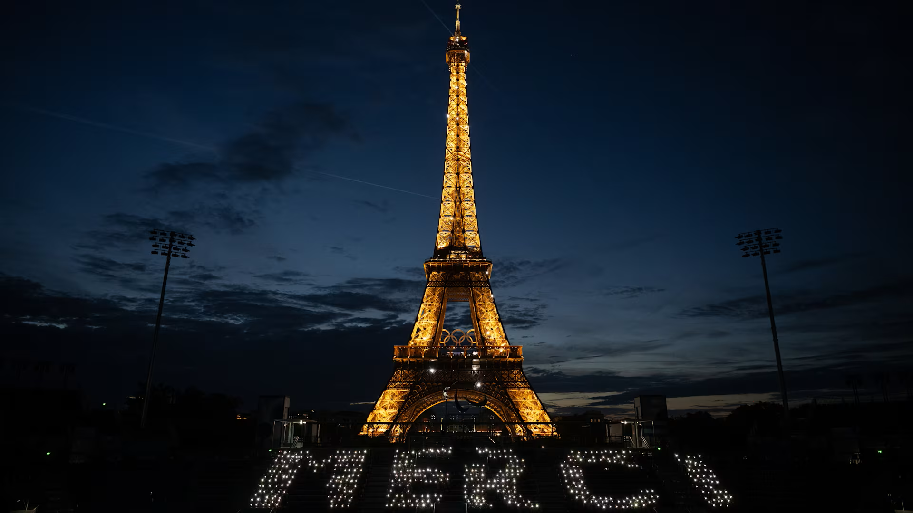
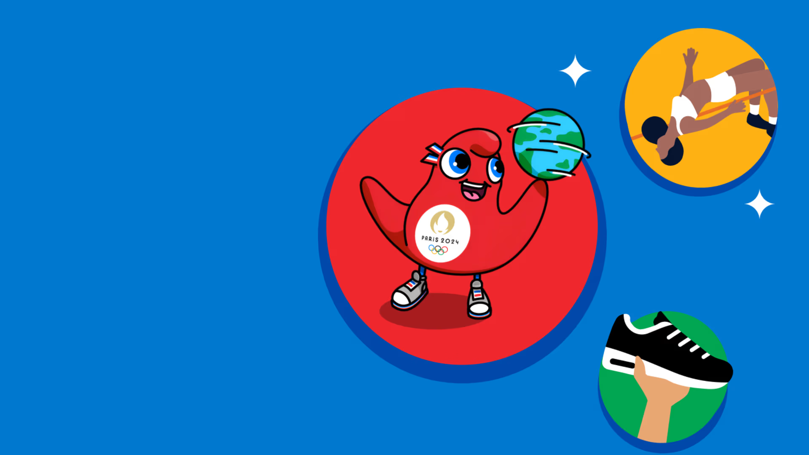
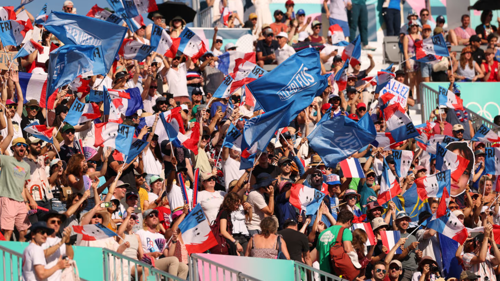
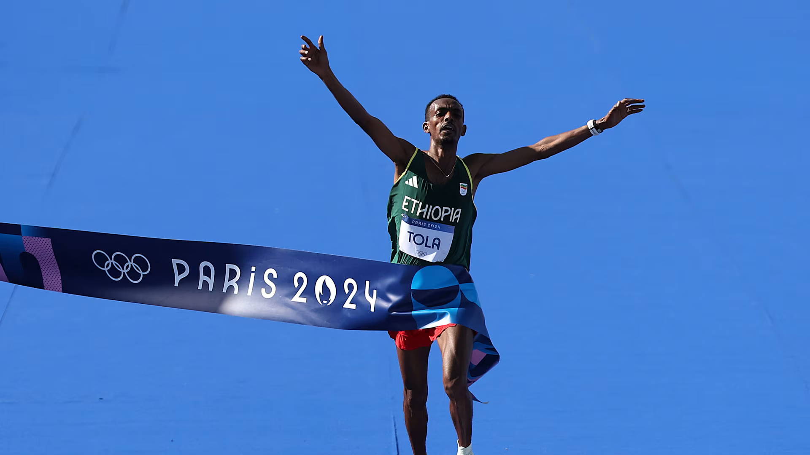

Jogos Olímpicos de Verão de 2024, oficialmente denominados Jogos da XXXIII Olimpíada (em francês: Jeux de la XXXIIIe Olympiade) e comumente conhecidos como Paris 2024, foi um evento multidesportivo internacional realizado de 26 de julho (data da cerimónia de abertura) a 11 de agosto de 2024 na França.
Paris foi a principal cidade anfitriã, com 16 outras cidades espalhadas pela França Metropolitana, além de uma subsede no Taiti — uma ilha dentro do país ultramarino francês e da coletividade ultramarina da Polinésia Francesa.
A cidade de Paris foi escolhida como sede na 131.ª Sessão do Comitê Olímpico Internacional (COI) em Lima, Peru, em 13 de setembro de 2017. Após múltiplas desistências que deixaram apenas Paris e Los Angeles na disputa, o COI aprovou um processo para defini-las como locais de realização dos Jogos de 2024 e 2028 respectivamente. Tendo anteriormente sediado os Jogos de 1900 e de 1924, Paris se tornará a segunda cidade, depois de Londres (que foi a anfitriã em 1908, 1948 e 2012), a sediar três vezes os Jogos Olímpicos de Verão. Paris 2024 também marca o centenário de Paris 1924, e estes Jogos Olímpicos são os sextos organizados pela França (três de verão e três de inverno), e os primeiros Jogos Olímpicos franceses desde os Jogos Olímpicos de Inverno de 1992 em Albertville. Em 2024 os Jogos Olímpicos de Verão retornam ao tradicional ciclo olímpico de quatro anos, já que os Jogos de 2020, em Tóquio, foram adiados em um ano devido à pandemia de COVID-19.
Os Jogos de 2024 contam com a estreia do breakdance como evento olímpico, e serão os últimos Jogos Olímpicos realizados durante a gestão do COI pelo presidente Thomas Bach. Os Jogos tinham a expectativa de serem os primeiros a contar com número idêntico de atletas entre homens e mulheres, mas após a lista final de inscritos os homens devem contar com uma quantidade superior de competidores. As Olimpíadas de Paris custaram cerca de 9 bilhões de euros.
Source: WikipediaOs XVII Jogos Paralímpicos de Verão, também chamados Jogos Paralímpicos de Paris 2024 ou mais comumente Paris 2024, foi um evento multiesportivo dirigido a atletas com deficiência, organizado pelo Comitê Paralímpico Internacional (CPI) e com sede em Paris, na França. As eleições para as sedes dos Jogos Paralímpicos de 2024 e 2028 ocorreram em 2017, em Lima, capital do Peru, América do Sul. A competição aconteceu entre os dias 28 de agosto e 8 de setembro de 2024 e pela primeira vez na história do torneio, há a igualdade entre homens e mulheres em todos os esportes (exceto o Futebol de 5 que segue sendo exclusivamente masculino e o Rugby em Cadeira de Rodas que ainda é misto).
É a primeira vez em que Paris sedia os Jogos Paralímpicos, que agora contou com 22 desportos. A edição também ficou marcada por ter tido a maior média de público, batendo os jogos de Londres 2012, chegando a 12,1 milhões de tickets vendidos durante todo o evento, resultando em arenas e ginásios lotados, sendo apelidada de Revolução Paralímpica.
Para aprender mais clique na imagem